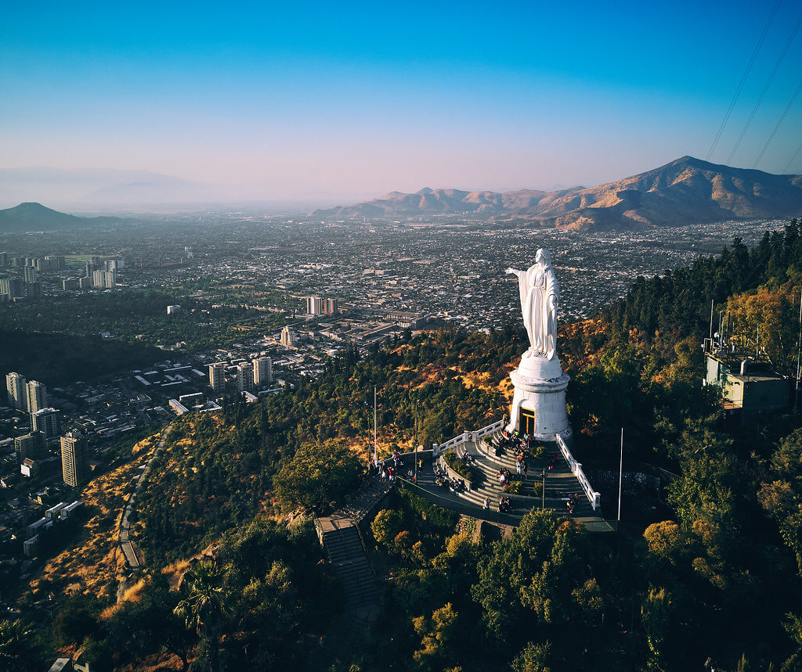
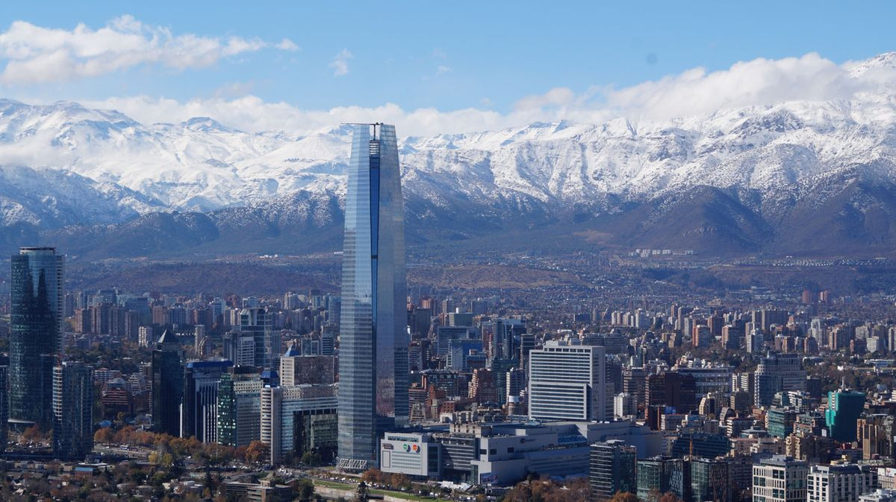
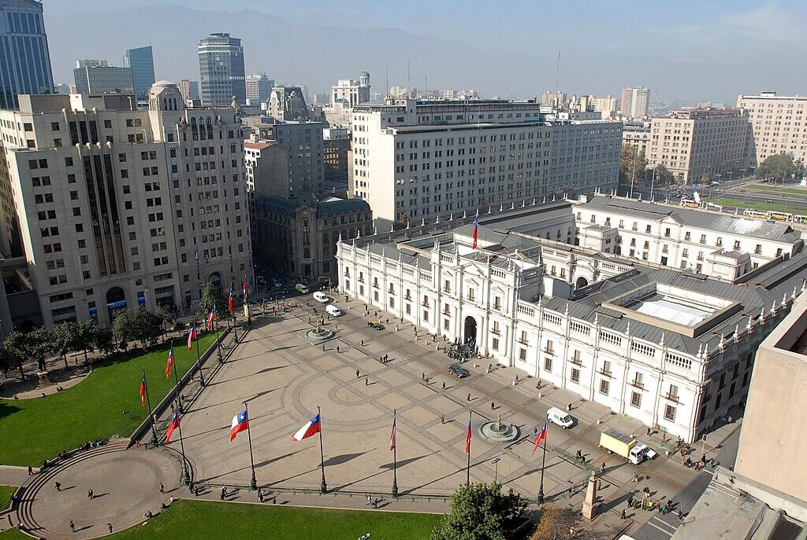
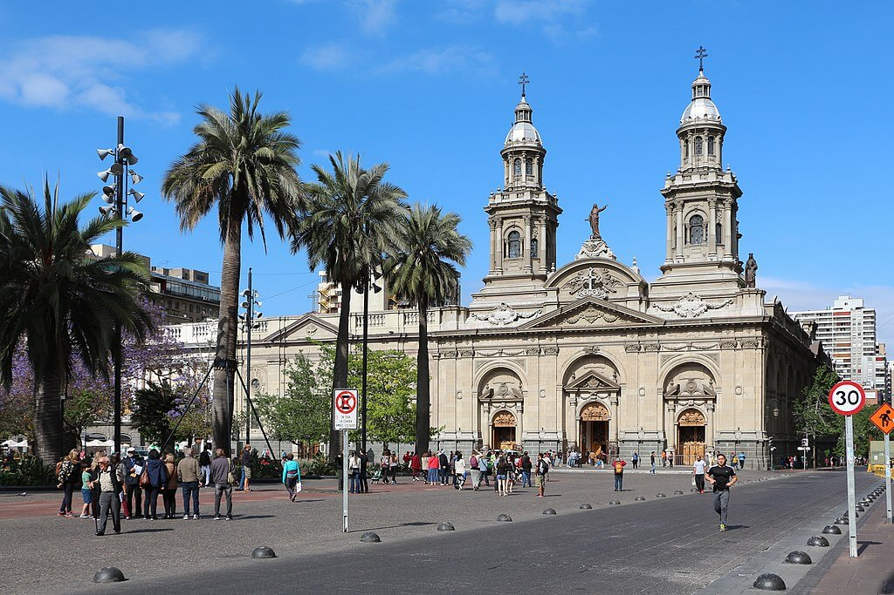

Cerro San Cristóbal
Uno de los principales miradores de la ciudad, con vistas panorámicas de Santiago. En su cumbre se encuentra una emblemática estatua de la Virgen María.

Santiago es la capital de Chile y el principal centro cultural, histórico y económico del país. Se encuentra rodeada por la Cordillera de los Andes y la cordillera de la costa, ofreciendo paisajes únicos.

Uno de los principales miradores de la ciudad, con vistas panorámicas de Santiago. En su cumbre se encuentra una emblemática estatua de la Virgen María.

Es la sede del Gobierno de Chile y uno de los edificios más importantes del país. Destaca por su arquitectura neoclásica y su relevancia histórica.

Es el corazón histórico de Santiago y un punto de encuentro para turistas y residentes. A su alrededor se encuentran importantes edificios patrimoniales.
